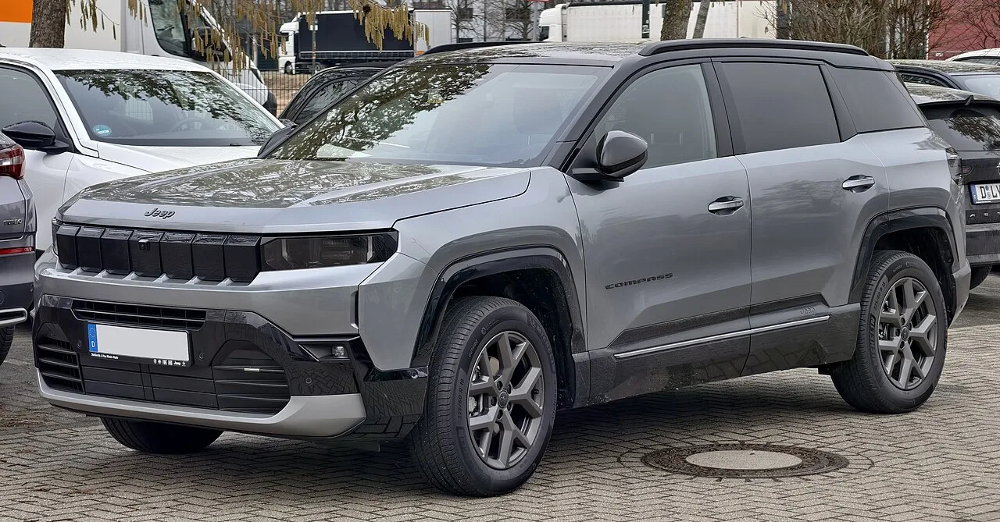
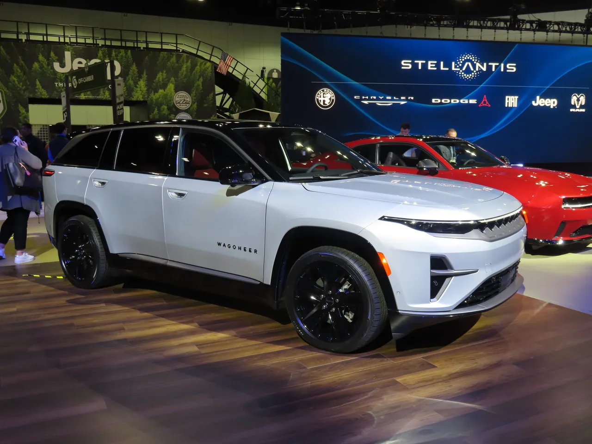
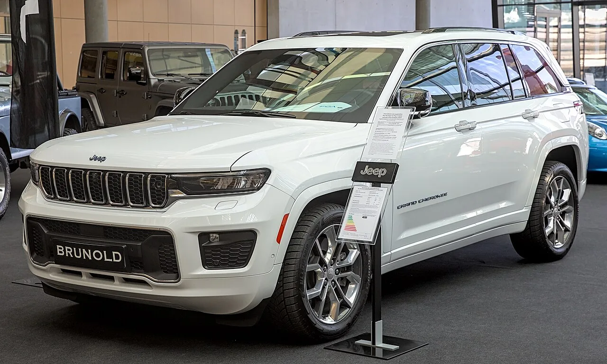
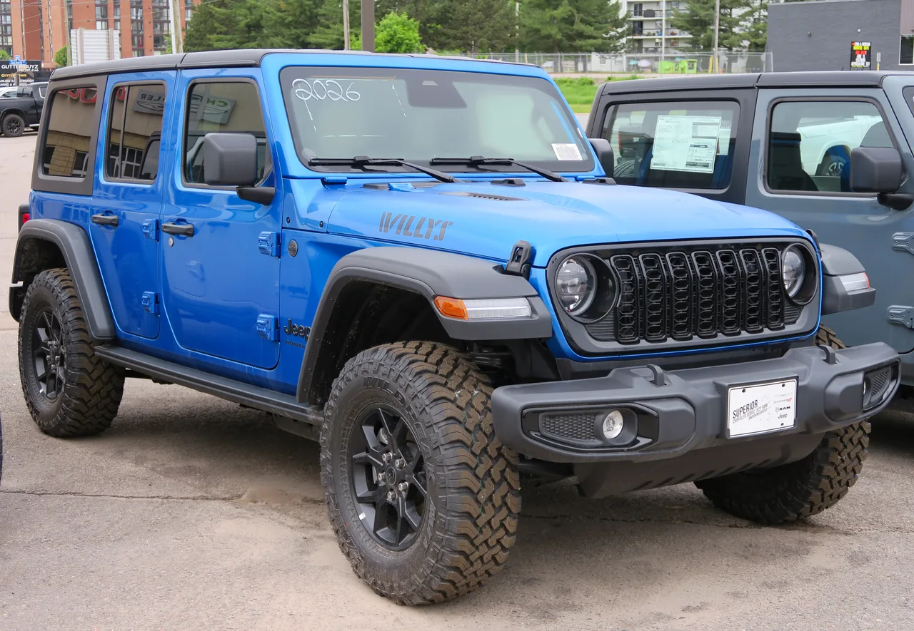

▲ 지프 컴패스. 중국에서 개발될 신차 2종은 순수전기와 플러그인 하이브리드로 나온다 ⓒ M 93, Wikimedia Commons (CC BY-SA 3.0 DE)
지프는 중국에서 한 번 실패했습니다. 2017년 20만 3,000대를 팔던 브랜드가 2022년에는 2만 대 아래로 내려앉았습니다. 결국 합작사를 정리하고 현지 생산을 접었습니다.
4년 만에 돌아갑니다. 다만 이번에는 파트너도, 목적도 다릅니다.
1. 무엇이 무너졌었나
지프는 2014년부터 중국 현지 생산을 해왔습니다. GAC와의 합작 구조였고, 한때 성과도 냈습니다.
| 시점 | 판매 |
|---|---|
| 2017년 | 20만 3,000대 |
| 2022년 | 2만 대 미만 |
| 2022년 이후 | GAC 합작사 정리 · 현지 생산 중단 |
5년 만에 10분의 1 이하입니다. 중국 시장이 전동화로 빠르게 넘어가는 동안 지프의 라인업은 내연기관 중심에 머물러 있었고, 현지 브랜드의 가격·기술 공세를 견디지 못했습니다.
2. 이번 구조는 어떻게 다른가
스텔란티스는 5월 둥펑자동차그룹과 새 협력 계약을 체결했습니다. 핵심은 12억 달러 규모의 합작사입니다.
| 구분 | 내용 |
|---|---|
| 규모 | 12억 달러 |
| 거점 | 중국 우한 |
| 둥펑 역할 | 핵심 전동화·지능형 차량 기술 제공 |
| 합작사 역할 | 차량 개발·마케팅 |
| 생산 | 기존 DPCA 합작사가 담당 |
📍 기술을 받아오는 쪽이 바뀌었습니다
과거 중국 합작 구조는 해외 브랜드가 기술을, 중국 파트너가 생산과 판로를 대는 형태였습니다.
이번 계약에서 전동화와 지능형 차량 기술을 제공하는 쪽은 둥펑입니다. 방향이 뒤집혔습니다. 중국의 전동화 기술 수준이 어디까지 왔는지를 보여주는 구조이기도 합니다.

▲ 지프 왜고니어 S. 지프는 별도로 순수전기 라인업을 넓혀왔지만, 중국 시장에서는 대응이 늦었다 ⓒ Wikimedia Commons
3. 어떤 차가 나오나
합작사가 내놓을 신차는 모두 4종입니다. 이 가운데 전동화 지프 2종과 푸조 2종으로 나뉩니다. 지프 쪽은 순수전기차(BEV)와 플러그인 하이브리드(PHEV) 버전이 함께 준비되며, 생산은 2027년 시작됩니다.
| 브랜드 | 대수 | 판로 |
|---|---|---|
| 지프 | 2종 (전동화) | 글로벌 수출 |
| 푸조 | 2종 | 중국 내수 + 해외 |
한 플랫폼에서 BEV와 PHEV를 함께 뽑는 방식은 중국 제조사들이 최근 표준처럼 쓰는 구성입니다. 충전 인프라가 갖춰진 도심에서는 BEV를, 장거리 수요에는 PHEV를 붙여 같은 차체로 두 시장을 덮습니다.

▲ 지프는 4xe 배지로 플러그인 하이브리드를 운영해왔다. 중국 신차는 BEV와 PHEV를 함께 갖춘다 ⓒ Wikimedia Commons
4. 진짜 변화는 '수출'입니다
과거와 가장 다른 지점은 판로입니다. 이전의 중국 생산은 중국 내수를 위한 것이었습니다. 이번에는 중국에서 만든 지프를 해외로 내보내는 것이 전제됐습니다.
구체적인 수출 대상국은 공개되지 않았습니다. 다만 아시아와 유럽 시장 공급이 유력하게 거론됩니다.
📍 왜 중국에서 만들어 내보내나
전기차의 원가는 배터리와 부품 공급망에서 결정됩니다. 그 공급망이 가장 촘촘하게 모여 있는 곳이 중국입니다.
완성차 업체들이 중국을 '판매 시장'이 아니라 '생산·개발 기지'로 다시 보는 흐름이 이어지고 있습니다. 지리가 유럽 공장에서 지커를 만들려는 것과 방향은 반대지만, 계산의 뿌리는 같습니다.
5. 넘어야 할 관세
변수는 관세입니다. 유럽연합은 중국산 배터리 전기차에 대한 상계관세를 2029년 말까지 유지하기로 한 상태입니다.
다만 최근에는 최저가격 약정 방식의 예외가 열리고 있습니다. 수출 가격 하한과 물량을 약속하면 추가 관세를 피하는 구조입니다. 서구 브랜드가 중국에서 만든 차에 이 방식이 적용된 사례가 이미 나왔습니다.
지프라는 미국 브랜드의 차를 중국에서 만들어 유럽에 파는 구도가 성립할지는 이 조건에 달려 있습니다.

▲ 지프의 브랜드 정체성은 오프로드에 뿌리를 두고 있다. 중국발 전동화 모델이 이 이미지와 어떻게 이어질지가 관건이다 ⓒ Wikimedia Commons
6. 국내에는 영향이 있을까
국내 지프 라인업은 랭글러·그랜드체로키·컴패스가 중심입니다. 미국과 유럽에서 생산된 물량이 들어옵니다.
중국산 지프가 한국에 들어올지는 현재로선 알 수 없습니다. 수출 대상국 자체가 공개되지 않았고, 생산 시작도 2027년입니다. 실제 차가 나오기까지는 시간이 더 필요합니다.
7. 정리
스텔란티스가 둥펑자동차그룹과 손잡고 지프의 중국 생산을 4년 만에 재개합니다. 5월 체결한 계약에 따라 12억 달러 규모의 합작사 둥펑 스텔란티스 오토모티브 테크놀로지가 우한에서 차량을 개발·생산합니다.
합작사는 신차 4종을 준비하며, 이 가운데 전동화 지프 2종이 글로벌 수출용, 푸조 2종이 중국 내수·해외용입니다. 지프 쪽은 BEV와 PHEV가 함께 준비되고 생산은 2027년 시작됩니다. 둥펑이 전동화·지능형 기술을 제공하고 생산은 기존 DPCA가 맡습니다.
과거와의 가장 큰 차이는 해외 수출이 전제됐다는 점입니다. 대상국은 미공개이나 아시아·유럽이 거론됩니다. 지프는 2017년 중국에서 20만 3,000대를 팔았지만 2022년 2만 대 미만으로 무너진 뒤 현지 생산을 중단했었습니다.